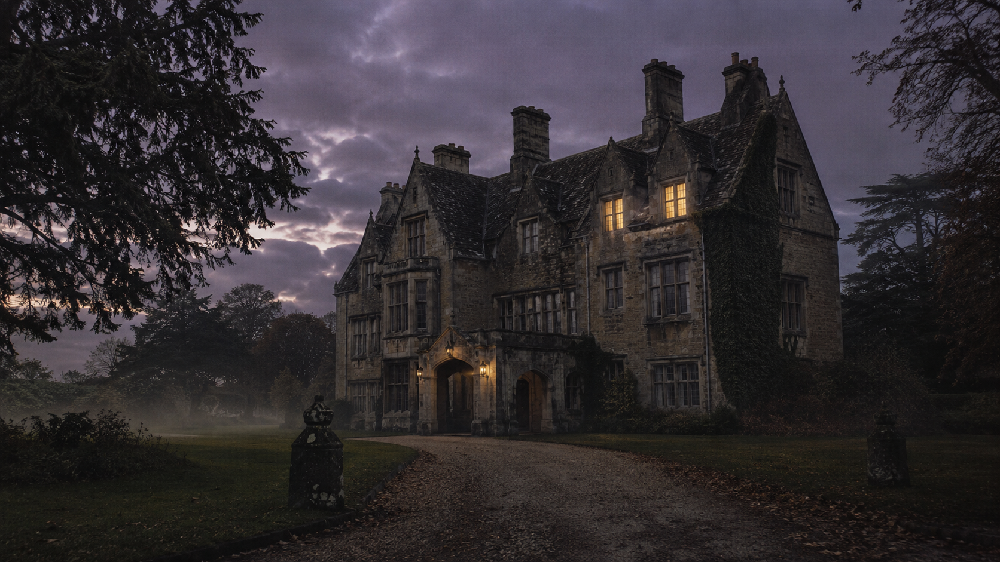
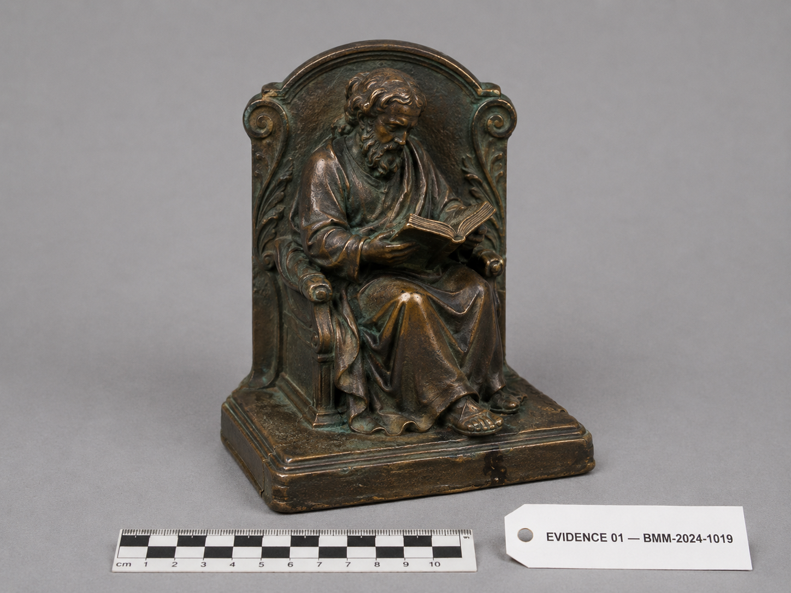

A 案件档案头 Case Brief

BLACKWOOD MANOR · Gloucestershire · 19 — 20 Oct 2024
黑木庄园
维多利亚哥特式乡村庄园 · 三层 + 酒窖 · 现持有人 Vivienne Ashford
受害人 · VICTIM
Elias Blackwood, 67
2024 年 10 月 20 日（周日）上午 08:30，秘书 Sarah Whitcombe 抵达黑木庄园，发现 Elias Blackwood 死于东翼 书房 (Room 103)。
初步勘查：钝器伤，凶器为书桌上一枚 青铜书挡。无强行入侵痕迹。前晚 19:00 起，七名宾客与五名常驻员工在场参加 Blackwood 文学奖年度晚宴。
所有人此夜均在庄园范围之内。读卡器、Wi-Fi、CCTV 系统记录均封存。
- 发现时间
- 周日 08:30
- 法医死亡时间窗 (ToD)
- 00:30 – 01:30
- 凶器
- 青铜书挡（桌面）
- 现场
- 东翼 · Room 103 书房
- 负责警官
- DI James Brennan

● 调查白板 Findings
每跑通一章查询，新发现自动登上白板。最新一条在最上。
● 调查发现
进度 [ 0 / 11 章 ]E SQL 沙盘 Query Console
编辑器是真沙盘——可以跑任何合法 SQLite。命中预期结果会解锁对应章节。
B 嫌疑人名册 Persons of Interest
7 名宾客 · 每张卡片记录该人物已可见的证据。证据条目随章节解锁。
D 时间线 Timeline
周六 18:00 → 周日 03:00。每条轨道一个人物。拖动顶部金色游标聚焦 ±15 分钟。
C 庄园平面图 Manor Floor Plan
悬停房间查看 CCTV/读卡器/当晚活动。书房 103 为案发现场。
F 家族树 Family Tree
默认仅显示公开记录。Sealed 关系在解锁前不可见。
G 物证柜 Evidence Cabinet
原始物证表 · 通讯 / 借阅 / 酒窖 / 文档操作日志。tab 随章节渐次开启。
I 偷听对话记录 Overheard
员工 Mrs Hodge / Pemberton / Chef Dubois 记录的当晚对话。时间顺序，无重点标记。
H 监控状态矩阵 CCTV Matrix
每个房间的 CCTV 覆盖、片段状态、删除信息。
J 案件结案页 Case Closed
第 11 章解锁后启用。七列证据由你自己跑出，不预先填好。